Guia de apresentação · versão 1.4.0 · outubro de 2026
Cesta Certa
Lista de compras inteligente: total em tempo real, preços comparados e receitas que viram lista.
Compre no supermercado com mais controle. Sem cadastro, sem anúncios e com os seus dados só no seu celular.
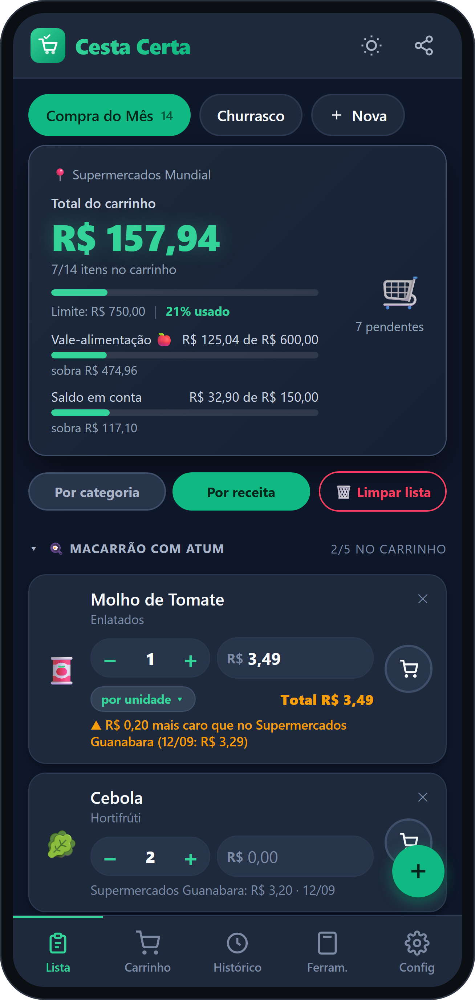
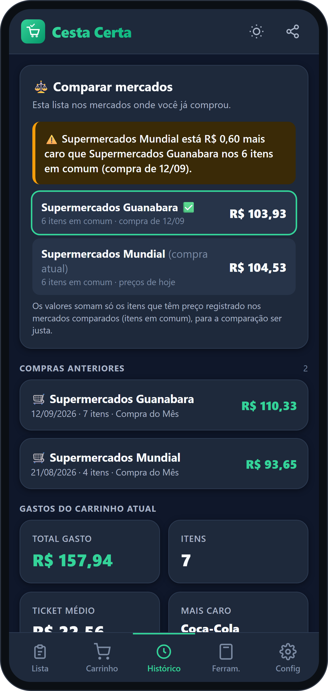
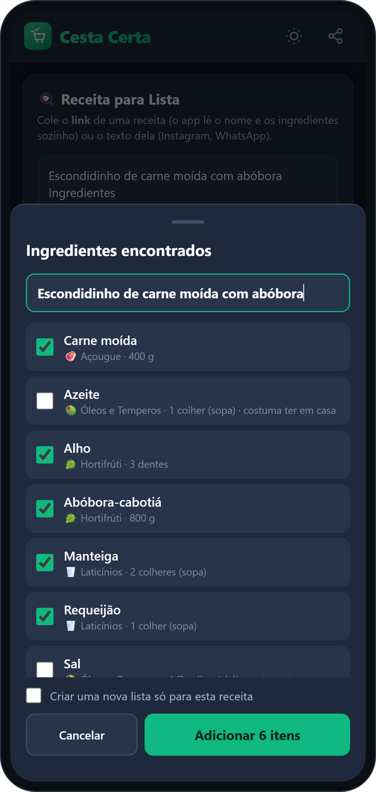
Cesta Certa · Lista de ComprasApresentação do produto
Visão geralO que é o Cesta Certa
O Cesta Certa é um aplicativo para Android que ajuda você a montar a lista, acompanhar o total enquanto compra e gastar só o que planejou. Ele também compara os preços entre mercados e transforma o ingrediente de uma receita em item da lista com poucos toques.
🛒
Lista e carrinho
Várias listas, itens organizados por categoria e o total do carrinho aparecendo na hora, conforme você digita os preços.
💰
Orçamento sob controle
Defina quanto pode gastar. O percentual muda de cor (verde, amarelo, laranja, vermelho) e dá para somar saldo em conta e vale-alimentação.
🍳
Receita vira lista
Cole o link ou o texto de uma receita. O app lê o nome do prato e separa os ingredientes para você marcar o que falta comprar.
⚖️
Compare mercados
Informe onde está comprando (ex.: Guanabara, Mundial). O app avisa se um item está mais barato ou mais caro que no outro mercado.
🧮
Ferramentas úteis
Preço por litro para comparar embalagens e calculadora de churrasco, que já joga carnes e bebidas na sua lista.
🔒
Simples e privado
Não pede conta, não tem anúncios e funciona sem internet. Os dados ficam no seu celular, com backup quando você quiser.
Para quem é
- Quem quer chegar ao caixa sem susto e acompanhar o total durante a compra.
- Quem usa vale-alimentação e precisa saber quanto sobra em cada fonte.
- Quem cozinha por receita e cansou de digitar ingrediente por ingrediente.
- Quem quer saber qual mercado compensa e organiza churrascos e compras do mês.
Em uma fraseVocê monta a lista, vai riscando no carrinho, vê o total subir e, no fim, o app guarda a compra para comparar na próxima vez.
Cesta Certa · Lista de ComprasApresentação do produto
Primeiros passosConhecendo o app
Na parte de baixo da tela ficam as cinco abas. É por elas que você faz tudo:
| Lista | O que ainda falta comprar. No topo: o total, o orçamento e o mercado. O botão verde + adiciona itens. |
| Carrinho | O que você já pegou na prateleira. Aqui fica o botão Finalizar compra. |
| Histórico | Compras anteriores e a comparação entre mercados. |
| Ferram. | Receita para lista, preço por litro e calculadora de churrasco. |
| Config | Nome, mercado e orçamento da lista, tema e backup. |
No topo da tela há ainda o ícone de sol/lua (tema claro ou escuro) e o de compartilhar (envia a lista por WhatsApp ou copia o texto).
Como instalar (versão de teste)
- Receba o arquivo .apk do app (WhatsApp, e-mail ou Drive) e toque nele.
- Se o Android pedir, permita instalar apps desta fonte.
- Toque em Instalar. O ícone Cesta Certa aparece no celular.
AtualizaçõesPara atualizar, instale a nova versão por cima: suas listas são mantidas.
Aba Lista: total, orçamento, mercado e itens por receita
Cesta Certa · Lista de ComprasApresentação do produto
Passo a passo 1Como cadastrar uma lista
- Abra a aba Lista e toque em + Nova, ao lado do nome das listas.
- Digite o nome da lista, por exemplo Compra do Mês ou Churrasco.
- Se quiser, informe o mercado onde vai comprar (ex.: Supermercados Guanabara). O app guarda os nomes que você já usou e sugere da próxima vez.
- Se quiser, informe o orçamento: quanto você pode gastar. Dá para mudar depois em Config.
- Toque em Criar Lista. Pronto, ela já está aberta para receber itens.
Trabalhando com várias listas
- Os nomes das listas aparecem em botões na linha de cima. Toque em um deles para trocar de lista.
- Em Config você renomeia, define mercado e orçamento, ou exclui a lista.
- O botão vermelho 🗑️ Limpar lista remove todos os itens, mas sempre pergunta antes: “Tem certeza que quer limpar toda a lista?” com as opções SIM e NÃO.
DicaCrie uma lista para cada ocasião (compra do mês, feira, churrasco). Assim você não mistura os totais.
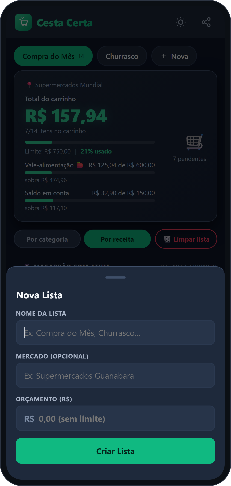
Nova lista: nome, mercado e orçamento
Cesta Certa · Lista de ComprasApresentação do produto
Passo a passo 2Adicionar itens e acompanhar o total
- Toque no botão verde +, no canto inferior direito.
- Digite o produto. O app sugere nomes (os que você já comprou aparecem primeiro) e escolhe a categoria sozinho. Para trocar, use a Troca rápida.
- Informe a quantidade e, se quiser, um preço estimado. Toque em Adicionar à Lista.
- No mercado, ao pegar o produto, toque no ícone do carrinho 🛒 do item. Ele vai para a aba Carrinho e o total sobe.
- Digite o preço da etiqueta no campo R$ do item. O total no topo atualiza na hora.
No cartão de cada item
- − e + mudam a quantidade, ou toque no número e digite (ex.: 24).
- Bebidas e carnes têm um campo de volume ou peso (ml, g) e mostram o preço por litro ou por kg.
- O ✕ remove o item.
- Em Por categoria / Por receita você escolhe como ver a lista. Toque no título de um bloco para recolher ou abrir os itens.
DicaUse sempre o mesmo nome para o mesmo produto (ex.: “Coca-Cola”). Isso ajuda o app a comparar preços entre mercados.
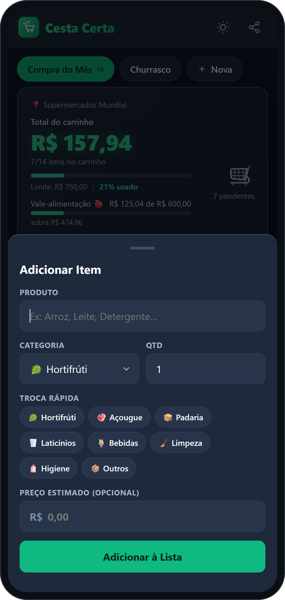
Adicionar item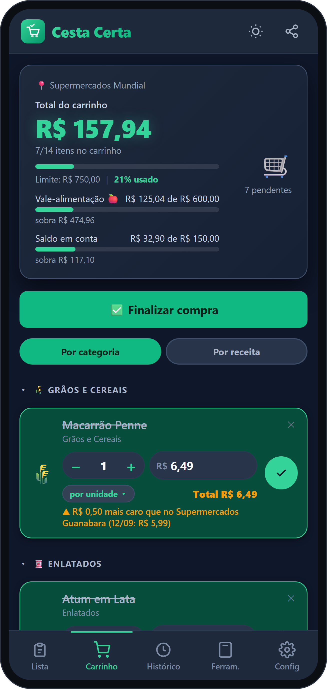
Carrinho com total
Cesta Certa · Lista de ComprasApresentação do produto
Passo a passo 3Como o preço é calculado
Nem todo preço é “por unidade”. 8 maçãs por R$ 24, por exemplo, não deve virar 8 × 24. Por isso cada item tem três jeitos de calcular:
| Modo | Use quando | Exemplo | Total |
|---|
| por unidade | O preço é de cada unidade | 3 pacotes de arroz a R$ 5,99 | R$ 17,97 |
| valor total | O preço já é de tudo junto | 8 maçãs por R$ 24 | R$ 24,00 |
| por kg | O preço é do quilo (ou litro) | Banana a R$ 7,90/kg, 900 g | R$ 7,11 |
Como trocar o modo
- Digite o preço do item.
- Na linha logo abaixo aparece um botão como “por unidade ▾”. Toque nele para alternar entre os três modos.
- No modo por kg, informe o peso (em gramas) no campo que aparece ao lado da quantidade.
AtençãoNo modo “por kg”, sem o peso o total fica R$ 0,00 e o app mostra “informe o peso”.
Em valor total o app mostra também quanto sai cada unidade (“R$ 3,00 cada”). Mudar a quantidade não altera o total.
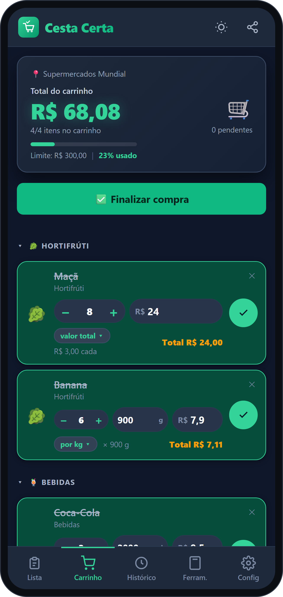
Os três modos no carrinho: valor total, por kg e por unidade
Cesta Certa · Lista de ComprasApresentação do produto
Passo a passo 4Como enviar uma receita
- Abra a aba Ferram. e vá ao cartão Receita para Lista.
- Cole o link da receita (copie o endereço da página no navegador) ou o texto da receita. O botão Colar ajuda.
- Toque em Ler ingredientes. Com link, o app busca a página (precisa de internet) e lê sozinho o nome do prato e os ingredientes.
- Na prévia, confira: ajuste o nome da receita e desmarque o que já tem em casa. Sal, óleo e água já vêm desmarcados, assim como o que já está na lista.
- Se quiser, marque “Criar uma nova lista só para esta receita”.
- Toque em Adicionar N itens. Na aba Lista, eles aparecem juntos em um bloco com o nome da receita.
Receita por textoFunciona com o texto completo ou só com os ingredientes. Se não houver a palavra “Ingredientes”, o app tenta achar as linhas com quantidades.
Quando o link não funcionaPáginas que exigem login (como o Instagram) ou sites que bloqueiam leitura não abrem por link. É só copiar o texto da receita (a legenda, por exemplo) e colar.
- Testado com sites como Receitas Nestlé, TudoGostoso e Receiteria.
- Medidas de receita (xícara, colher) ficam anotadas no nome, como Açúcar — 1 xícara; a quantidade começa em 1 para você ajustar ao comprar.
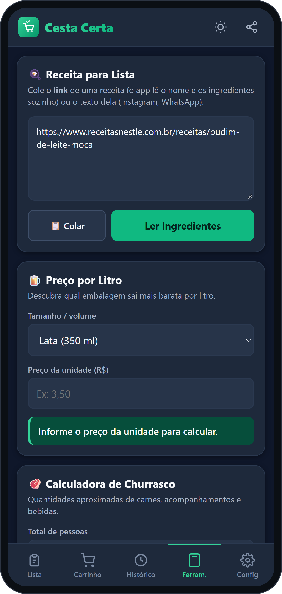
Link colado, pronto para lerPrévia: marque o que comprar
Cesta Certa · Lista de ComprasApresentação do produto
Passo a passo 5Orçamento: simples ou por fonte
Orçamento simples
Informe um valor ao criar a lista ou em Config → Orçamento → Definir. O topo da tela mostra “Limite: R$ 750,00 | 21% usado” e uma barra de progresso.
Orçamento por fonte (conta + vale-alimentação)
- Vá em Config → Orçamento → Definir.
- Toque em + Vale-alimentação e em + Saldo em conta (ou + Outra) e informe o valor de cada fonte.
- No vale, deixe marcado “Só para alimentos”.
- Toque em Salvar. O orçamento da lista vira a soma das fontes.
Durante a compra o app mostra quanto já usou e quanto sobra em cada fonte. Alimentos saem primeiro do vale; limpeza e higiene só saem do saldo. Se esses itens passarem do saldo, o app avisa, mesmo que ainda sobre no vale.
As cores do percentual
menos de 50%tranquilo
50% a 74%atenção
75% a 99%quase no limite
100% ou maispassou
ImportanteCada cartão de vale tem suas regras. Se o seu também cobrir outros itens, use a fonte como “saldo” (sem marcar “só para alimentos”).
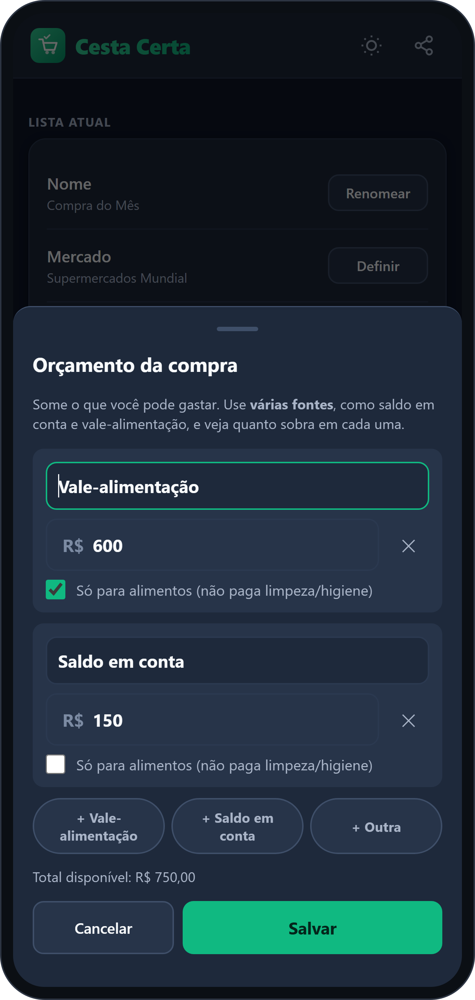
Definindo as fontesQuanto sobra em cada fonte
Cesta Certa · Lista de ComprasApresentação do produto
Passo a passo 6Finalizar a compra e comparar mercados
- Informe o mercado. Toque em “📍 Informar o mercado” no topo da tela (ou preencha ao criar a lista). Ex.: Supermercados Guanabara.
- Compre normalmente e digite os preços. Enquanto você digita, o app mostra se o item está mais barato ou mais caro que em outro mercado: “▲ R$ 0,50 mais caro que no Guanabara (12/09)”.
- Ao terminar, abra a aba Carrinho e toque em Finalizar compra. Confirme o mercado e a data.
- Escolha o que fazer com a lista: remover os itens comprados ou manter os itens (sem preços) para a próxima compra.
- Toque em Salvar compra. Ela vai para o Histórico.
O que você vê no Histórico
- Comparar mercados: em qual mercado a sua lista sai mais barata, considerando só os itens que existem nos dois. Ex.: “Mundial está R$ 0,60 mais caro que o Guanabara nos 6 itens em comum”.
- Compras anteriores: mercado, data e total. Toque para ver os itens ou excluir.
- Gastos do carrinho atual por categoria.
DicaA comparação fica boa a partir da segunda compra registrada. Quanto mais compras, mais certeira.
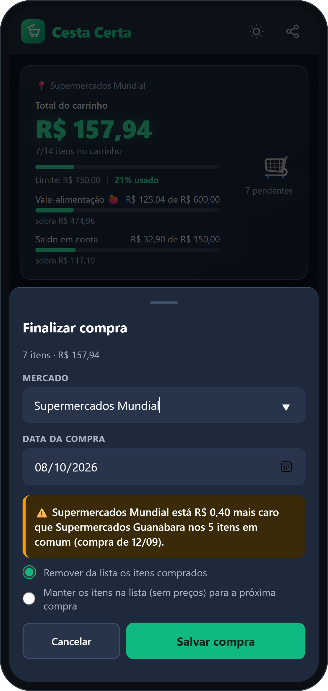
Finalizar compraHistórico e comparação
Cesta Certa · Lista de ComprasApresentação do produto
ExtrasFerramentas, backup e outros recursos
Preço por litro
Em Ferram., escolha a embalagem (lata, garrafa, 2 litros ou outro volume) e informe o preço. O app mostra quanto custa o litro, para comparar qual compensa mais.
Calculadora de churrasco
Informe o total de pessoas, quantas bebem cerveja e quantas são crianças. O app calcula carne bovina, linguiça, frango, pão de alho, cerveja e refrigerante, com as carnes arredondadas para 0,5 kg ou 1 kg. O botão Adicionar tudo à lista atual coloca tudo na sua lista.
Backup e troca de celular
- Em Config → Backup → Abrir, toque em Copiar e guarde o texto (por exemplo, mandando para você mesmo no WhatsApp).
- No celular novo, abra o mesmo caminho, cole o texto e toque em Restaurar.
AtençãoRestaurar substitui os dados atuais do aparelho. O app sempre pede confirmação.
Outros recursos
- Compartilhar a lista: ícone no topo da tela, para copiar ou enviar por WhatsApp.
- Tema claro ou escuro: ícone de sol/lua no topo. O escuro é bom dentro do mercado.
- Excluir lista: em Config, para remover uma lista inteira.
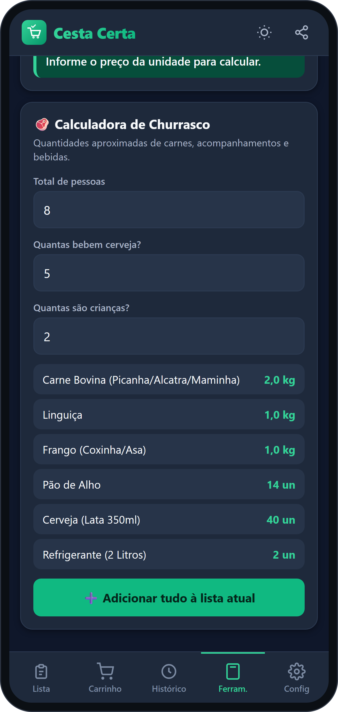
Calculadora de churrasco
Cesta Certa · Lista de ComprasApresentação do produto
AjudaDicas e perguntas frequentes
- Preciso de internet para usar?
- Não. Listas, carrinho, orçamento, histórico, calculadoras e backup funcionam sem internet. Só a leitura de receita por link usa a internet.
- Meus dados vão para algum lugar?
- Não. Tudo fica no seu celular. O app não pede conta e não tem anúncios. Para guardar uma cópia, use o Backup.
- Troquei de celular. Perdi minhas listas?
- Não, se você fizer o backup. No aparelho antigo, copie o backup; no novo, cole e restaure.
- A comparação de preços não aparece. O que fazer?
- Registre pelo menos duas compras com Finalizar compra, informe o mercado de cada uma, digite os preços e use nomes iguais ou parecidos para os produtos.
- A receita por link não funcionou.
- Alguns sites bloqueiam a leitura e o Instagram exige login. Copie o texto da receita e cole no mesmo campo.
- O total não bate com o que eu esperava.
- Confira o modo do preço do item (por unidade, valor total ou por kg). Em “por kg”, lembre de informar o peso.
- Apaguei os itens sem querer.
- O botão Limpar lista sempre pede confirmação (SIM ou NÃO). Se mesmo assim limpou a lista, restaure o seu último backup em Config → Backup, caso tenha feito um.
Resumo do dia a dia
- Crie a lista e informe o mercado e o orçamento.
- Adicione os itens (ou envie uma receita).
- No mercado, passe os itens para o carrinho e digite os preços.
- Finalize a compra e consulte o Histórico para comparar.
Cesta Certa
Compre com mais controle. Dúvidas e sugestões? Fale com quem enviou o app para você.